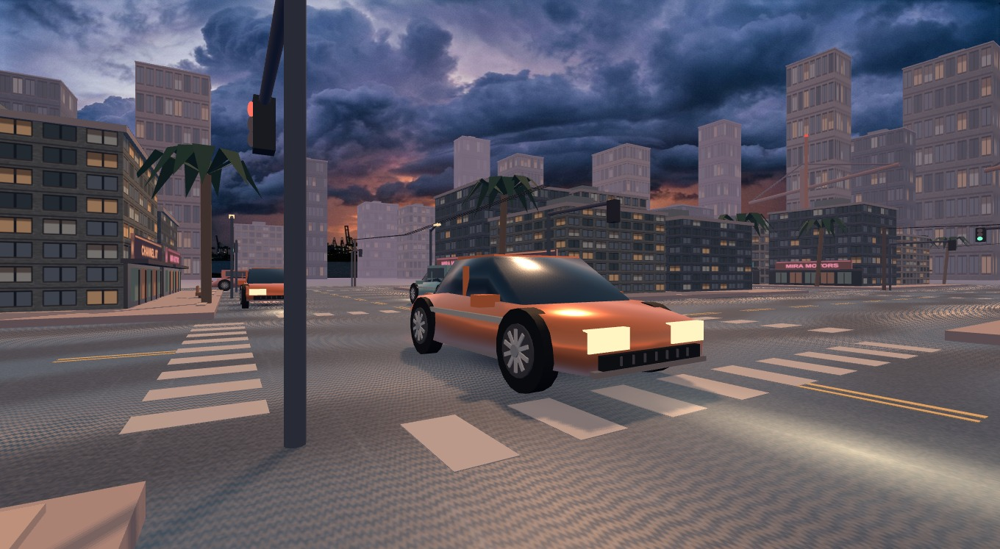

Own the
airwaves.
The port authority cut the signal. As courier Vale Rook, run the tapes, lift a ride, and put Kestrel Quay back on air.

KESTREL QUAY // 1998
The port authority cut the signal. As courier Vale Rook, run the tapes, lift a ride, and put Kestrel Quay back on air.